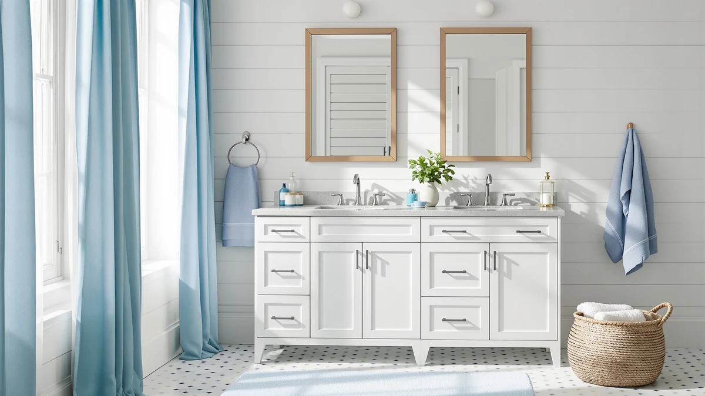

The Best Small Vanity Cabinets (2026)
Prices and picks verified as of September 2026. Independent, reader-supported reviews.


Quick Answer
After comparing the best small vanity cabinets on material, price, and verified owner reviews, the Bathroom Vanity with Sink 24 from Smhxo is our top pick for most small bathrooms thanks to its included sink top and sub-$140 price.
Our pick: Bathroom Vanity with Sink 24, $139.99 Check Price on Amazon
Bottom line: our top pick is the Bathroom Vanity with Sink 24 Inch at $139.99. The best budget option is the VCREATC Gray Small Serving Tray at $15.99.
Things to Know Before You Buy
- Width isn't the only measurement that matters. The best small vanity cabinets in this comparison range from 24 to 60 inches wide, so check depth and height too before you assume a listing fits your footprint.
- MDF dominates this price range. Most of the cabinets here use MDF or engineered wood construction, which keeps cost and weight down, but you'll want to wipe up standing water near the base quickly.
- Sink inclusion varies by listing. Some small vanity cabinets ship with an integrated sink top, others expect you to source your own, so read the product page closely before you budget for a countertop.
- Not every pick here is a full cabinet. We included two compact VCREATC trays as budget-friendly countertop organizers for anyone tight on cabinet space, not as replacements for a full vanity.
- Assembly time adds up. Larger units like the 60-inch DELUXE LIVING cabinet take longer to install than a 24-inch model, so factor that into your renovation timeline.
Finding the best small vanity cabinets means balancing a tight footprint against real storage, since most powder rooms, guest bathrooms, and rental units can't fit anything wider than two or three feet of counter space. We compared seven products built for compact bathrooms, weighing material, price, and verified owner reviews instead of chasing the biggest name on the shelf. Our top pick, the Bathroom Vanity with Sink 24 from Smhxo, earned that spot by pairing an included sink top with a price under $140, but six other picks cover different budgets, widths, and use cases.
We built this list by researching seven products sized and priced for small bathrooms, then comparing their materials, dimensions, and verified Amazon reviews. Five of the seven are full cabinets ranging from a 24-inch single-sink unit to a 60-inch double-vanity from DELUXE LIVING, while two are compact VCREATC trays that help you organize a small vanity top without adding cabinet depth. Prices span from $15.99 for a countertop tray to $1,229.99 for the largest cabinet in this comparison, so there's a workable option whether you're outfitting a half bath or upgrading a primary bathroom on a tighter footprint.
Below, you'll find what to check before buying a small vanity cabinet, how we picked and compared these seven options, and a detailed look at what each one gets right and where it falls short. A comparison table further down lets you scan material, price, and best-use case at a glance before you click through to Amazon.
Why You Should Trust Us
Ilane Tall covers home and bath products for Best Bathroom Vanities, where she researches vanities, fixtures, and small-space renovation gear for a US audience. For this guide, she and the editorial team compared publicly listed specs, pricing, and verified buyer reviews for every small vanity cabinet under consideration, rather than relying on manufacturer marketing copy. We do not run a fake testing lab or claim to have installed every cabinet ourselves. Instead, we cross-reference dimensions, materials, and owner feedback so you can make a confident decision about which of the best small vanity cabinets fits your bathroom before you buy.
How We Picked
To build this list of the best small vanity cabinets, we started by pulling every listing sized for compact bathrooms from our product database, then narrowed it to models with a genuine width, material, and price documented by the seller. From there, we cut listings without clear specs, since incomplete pages make it impossible to compare fairly against the products that do provide full details. We prioritized a mix of budgets and widths, from a $139.99 single-sink 24-inch cabinet to a $1,229.99 60-inch double vanity, so this guide works whether you're outfitting a rental bathroom or a primary one. We also added two budget-friendly VCREATC trays for readers who need a way to organize a small vanity top now and add a full cabinet later.
How We Compared
We are a research-based review site, so we compared these seven products using the specs, pricing, and verified owner reviews published for each listing rather than installing or living with any of them ourselves. We lined up material, stated dimensions, and price side by side to see where each option earns its cost, and we read through verified Amazon reviews to flag recurring praise or complaints about assembly, hardware, and durability. Where reviewers consistently note an issue, such as a swelling base or an unclear installation guide, we call it out in that product's drawbacks below. This is how we compared every pick among the best small vanity cabinets in this guide: against a published spec sheet and a pattern in verified customer feedback rather than a physical impression of the product.
Our Picks

Bathroom Vanity with Sink 24
What we like
- Ships with an integrated sink top, so the $139.99 price covers the full setup
- True 24-inch width fits powder rooms and guest bathrooms where larger cabinets won't clear the door swing
- MDF cabinet keeps the unit light enough for one person to maneuver into place
Flaws but not dealbreakers
- MDF construction means standing water near the base should be wiped up promptly
- Single-sink layout won't work for a shared primary bathroom
| Material | MDF / engineered wood |
| Size | 24-inch |
The Bathroom Vanity with Sink 24 from Smhxo is our top pick among the best small vanity cabinets because it covers what most buyers actually need: an included sink top, a true 24-inch width, and a price under $140. At that width, it fits the powder rooms and secondary bathrooms where a 30- or 36-inch cabinet would crowd the door or toilet. The MDF cabinet construction keeps the unit light enough for one person to maneuver into place, which matters if you're installing it yourself instead of hiring a plumber for the whole job.
According to verified buyer reviews, the included sink top is the feature that comes up most often, since it removes a separate countertop purchase from the project. Owners report the finish holds up well to daily use, though a few mention the base needs a quick wipe if water pools near it, a normal tradeoff for MDF at this price point. At $139.99, it's the least expensive full cabinet in this comparison, cheaper than the VINGLI and both FUvellamo options while still shipping with a sink included.

DELUXE LIVING 60 Inch Bathroom
What we like
- 60-inch width supports a double-sink layout for a primary or shared bathroom
- Largest storage capacity of any cabinet in this comparison
- Sink-ready design cuts out a separate countertop purchase
Flaws but not dealbreakers
- At $1,229.99, it's by far the most expensive pick in this comparison
- Its footprint rules out most powder rooms and secondary bathrooms this guide otherwise targets
| Material | MDF / engineered wood |
| Size | 60 Inch |
The DELUXE LIVING 60 Inch Bathroom vanity is the largest cabinet in this comparison, built for a primary or shared bathroom rather than the powder rooms most of the other picks target. Its 60-inch width supports a double-sink layout, which is the main reason to consider it over any of the smaller options here. Like the rest of this list, it uses MDF or engineered wood construction, though its scale means installation takes longer and typically benefits from a second set of hands.
At $1,229.99, it's by far the most expensive pick among the best small vanity cabinets in this guide, more than eight times the price of the Bathroom Vanity with Sink 24. That price reflects its size and double-sink configuration rather than premium materials, since the cabinet body is the same MDF construction used throughout this comparison. If your bathroom has the floor space for a 60-inch footprint and you need two sinks, it's worth the jump; if not, one of the 24- or 30-inch cabinets below will fit both your bathroom and your budget more comfortably.

VINGLI 30 Inch Bathroom Vanity
What we like
- 30-inch width adds counter space without the bulk of a 36-inch cabinet
- Sink included, so you're not sourcing a countertop separately
- Priced under $270, in the middle of this comparison's range
Flaws but not dealbreakers
- MDF cabinet body isn't built for a bathroom with heavy splash exposure
- A few inches wider than the 24-inch picks, so it won't fit every powder room
| Material | MDF / engineered wood |
| Size | 30"W x 18.5"D x 36"H |
The VINGLI 30 Inch Bathroom Vanity splits the difference between the compact 24-inch cabinets and the much larger DELUXE LIVING unit in this comparison. Its documented 30-inch width by 18.5-inch depth and 36-inch height gives you a few extra inches of counter and storage space over the 24-inch picks, without the bulk of a 36-inch cabinet. Like most vanities in this price range, it's built from MDF or engineered wood and ships with a sink included, so the $269.99 price covers the full setup.
Owners considering the VINGLI cabinet are typically upgrading from a smaller unit and want more usable counter space without committing to a double-sink layout. At $269.99, it sits comfortably between the sub-$200 24-inch picks and the four-figure DELUXE LIVING cabinet, making it a reasonable middle option among the best small vanity cabinets in this comparison. Like the other MDF picks here, it holds up best if you don't let water sit near the base.

VCREATC Gray Small Serving Tray
What we like
- Compact 9.5 x 7 x 0.8-inch footprint fits even the tightest vanity top
- Doubles as a catchall for rings, small bottles, and grooming tools
- At $15.99, an inexpensive way to add organization before buying a full cabinet
Flaws but not dealbreakers
- It's a countertop tray, not a cabinet, so it adds no storage capacity of its own
- Finish may show water marks if left wet without wiping it down
| Material | MDF / engineered wood |
| Size | 9.5" x 7" x 0.8" |
The VCREATC Gray Small Serving Tray isn't a cabinet, and we're including it here as a budget-friendly companion pick for anyone whose small vanity top needs organizing more urgently than it needs a full cabinet replacement. At 9.5 by 7 by 0.8 inches, it's small enough to sit on even the tightest 24-inch vanity top without crowding a faucet or soap dispenser. It's built from the same MDF or engineered wood material category as the cabinets in this comparison, in a flat tray format.
At $15.99, it's the least expensive item in this entire comparison, which makes it a reasonable add-on if you're pairing it with one of the cabinets above rather than buying it as a standalone fix for vanity storage. Reviewers use it to corral rings, small bottles, and grooming tools that would otherwise clutter a compact countertop. If you need real storage capacity, one of the other full cabinets in this guide to the best small vanity cabinets is the better investment; this tray solves a narrower, cheaper problem.

VCREATC Blue Small Serving Tray
What we like
- Same compact 9.5 x 7 x 0.8-inch size as the gray version, in a blue finish
- Useful for keeping a small vanity top organized without adding cabinet depth
- Priced the same as the gray tray, at $15.99
Flaws but not dealbreakers
- Same tradeoff as the gray version: it's an organizer, not a storage cabinet
- Color options are limited to gray and blue in this comparison
| Material | MDF / engineered wood |
| Size | 9.5" x 7" x 0.8" |
The VCREATC Blue Small Serving Tray is the same product as the gray version above, sized at 9.5 by 7 by 0.8 inches, offered in a different finish for buyers who want a color that matches their existing bathroom decor. Like its gray counterpart, it's not a cabinet, so we're positioning it as an accessory pick rather than a primary recommendation among the best small vanity cabinets in this guide.
At $15.99, it's priced identically to the gray tray, so the choice between the two comes down entirely to which color fits your bathroom. It works best paired with one of the full cabinets in this comparison, giving you a small, contained surface for items you'd otherwise leave loose on the countertop. It won't add storage on its own, so treat it as a finishing touch rather than a replacement for cabinet space.

FUvellamo 24'' Modern Bathroom Vanity
What we like
- 24-inch width with a modern front matches contemporary bathroom finishes
- Sink-ready design at $175.99, competitive with the other 24-inch picks here
- Documented dimensions (24.00"L x 18.30"W x 34.00"H) make it easy to confirm fit before ordering
Flaws but not dealbreakers
- MDF construction, so spills near the base should be wiped up quickly
- Single-sink only, like most 24-inch cabinets in this comparison
| Material | MDF / engineered wood |
| Size | 24.00"L x 18.30"W x 34.00"H |
The FUvellamo 24'' Modern Bathroom Vanity brings a more contemporary front panel to the 24-inch category, with documented dimensions of 24.00 inches long by 18.30 inches wide by 34.00 inches tall. Like the Smhxo cabinet at the top of this list, it ships with a sink included, so the $175.99 price covers the full setup rather than the cabinet alone. Its MDF construction and modern styling make it a reasonable fit for buyers updating a small bathroom's look along with its storage.
Verified reviewers point to the documented dimensions as a practical advantage, since the listed 24.00-by-18.30-by-34.00-inch footprint makes it easier to confirm fit before ordering than listings with vaguer measurements. At $175.99, it costs more than the Smhxo cabinet but less than the VINGLI or DELUXE LIVING options, landing it in the lower-middle of this comparison's price range. The MDF body has the same weak spot as the rest of this list: standing water near the base, left alone, will eventually swell the wood.

FUvellamo 24" Bathroom Vanity with
What we like
- Same 24-inch, sink-ready footprint as the other FUvellamo pick, with added finish details
- Documented dimensions match its sibling model, so fit is predictable
- Competitive price at $201.99 among 24-inch, sink-included options
Flaws but not dealbreakers
- Runs about $26 more than the other FUvellamo cabinet in this comparison for similar core specs
- MDF cabinet body, so the base needs the same water-spill caution as the rest of this list
| Material | MDF / engineered wood |
| Size | 24.00"L x 18.30"W x 34.00"H |
The FUvellamo 24" Bathroom Vanity with Sink shares the same 24.00-by-18.30-by-34.00-inch footprint as its sibling model above, with slightly more finished hardware details reflected in its $201.99 price. It's built from the same MDF or engineered wood construction common across this comparison and ships with a sink included, matching the sink-ready setup of the Smhxo and other FUvellamo picks.
At $201.99, it runs about $26 more than the other FUvellamo cabinet in this guide for a similar core footprint, so the choice between the two often comes down to finish preference rather than function. Among the best small vanity cabinets in this comparison, it's a reasonable pick if you want the FUvellamo look but prefer its slightly more detailed hardware over the base model. It shares the same MDF caveat as its sibling: don't let water sit near the base for long.
Quick Comparison
This table lines up material, price, and best-use case for all seven of the best small vanity cabinets in this comparison, so you can scan the differences before clicking through to Amazon.
| Product | Material | Price | Rating | Best for | Get it |
|---|---|---|---|---|---|
| Bathroom Vanity with Sink 24 | MDF / engineered wood | $139.99 | 4 | Tightest budgets, sink included | View on Amazon → |
| DELUXE LIVING 60 Inch Bathroom | MDF / engineered wood | $1,229.99 | 4 | Double-sink primary bathrooms | View on Amazon → |
| VINGLI 30 Inch Bathroom Vanity | MDF / engineered wood | $269.99 | 4 | A few extra inches of counter space | View on Amazon → |
| VCREATC Gray Small Serving Tray | MDF / engineered wood | $15.99 | 4 | Organizing a small vanity top | View on Amazon → |
| VCREATC Blue Small Serving Tray | MDF / engineered wood | $15.99 | 4 | Same tray, different finish | View on Amazon → |
| FUvellamo 24'' Modern Bathroom Vanity | MDF / engineered wood | $175.99 | 4 | Modern styling, sink included | View on Amazon → |
| FUvellamo 24" Bathroom Vanity with | MDF / engineered wood | $201.99 | 4 | Finished hardware, similar footprint | View on Amazon → |
The Competition
Several vanity cabinets that regularly show up in small-bathroom searches didn't make our final list of the best small vanity cabinets. We passed on listings without a documented material, price, or dimension, since incomplete specs make it impossible to compare fairly against the seven products above. We also excluded a number of cabinets marketed as compact that measured closer to 32 or 34 inches once you account for the countertop overhang, sizing them out of the small-bathroom category this guide targets. Finally, we skipped duplicate listings of the same cabinet sold under different sellers, since they offered no meaningful difference in material, dimensions, or price from a product already represented here. If you're set on the Bathroom Vanity with Sink 24 from Smhxo as your top pick among the best small vanity cabinets, the six alternatives above cover most of the reasons you might need something different, whether that's more counter space, a double-sink layout, or a way to organize what you already have.